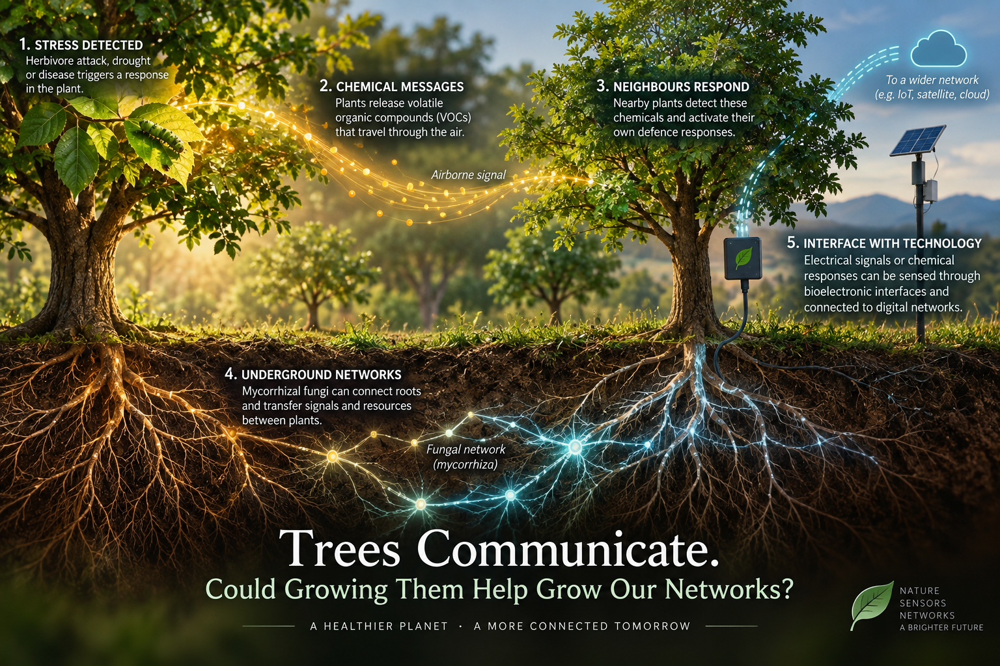

Trees Communicate. Could Growing Them Help Grow Our Networks?

In my work on energy-neutral devices, I often come back to the same practical problem: how do we monitor an environment for years without creating another maintenance burden? A sensor may consume very little power, but someone still has to manufacture it, install it and eventually repair or replace it.
That question takes an interesting turn when the environment we want to monitor already contains living organisms that respond to changes around them. Plants detect and react to their surroundings. Some of those responses also affect neighbouring organisms. Could we make use of that capability when designing sensing and communication systems?
One example is the release of volatile organic compounds, or VOCs. When plants are damaged by herbivores, they can release airborne chemicals that other plants perceive. Under certain conditions, this exposure can trigger or prepare defence responses. Experiments in Arabidopsis have directly visualised calcium responses in plants exposed to particular airborne compounds associated with leaf damage. [1] There is a measurable biological response behind the familiar phrase “plants communicate.”
As a wireless researcher, I find it useful to look at this in terms of a source, a channel and a receiver. A plant releases a compound; it moves through the air; another plant responds. But the analogy has limits. We cannot assume that the sender deliberately encodes a message, or that the receiver interprets it in the way a digital device would.
Still, it gives us something concrete to investigate. What information can we infer from the response? Over what distance? How do wind, dilution and other chemical sources affect detection? These are questions about the channel and the reliability of the information we can recover from it.
Below ground, the picture is more complicated. Mycorrhizal fungi can connect the roots of different plants. A study involving Douglas-fir and ponderosa pine seedlings reported carbon transfer and defence responses associated with these connections after damage to the Douglas-fir seedlings. [2] That is an interesting result, but it does not establish that forests operate as networks of biological relays.
The “wood-wide web” is an appealing description, and an easy one to take too far. Researchers have challenged claims that mature trees use fungal connections to direct resources or warnings towards their offspring. The extent of these connections, their function and their importance under natural conditions remain subjects of debate. [3] I would therefore be careful about treating them as an underground equivalent of a wireless mesh network.
For engineering, a more concrete starting point is the interface between plants and electronics. Researchers have already demonstrated electronic components integrated into plant tissue. In one early example, conducting polymers formed structures within rose stems that were used to build electronic devices. [4] Such work shows that biological structures and electronic functions can be brought together, although it is a considerable step from a laboratory demonstration to a system that works outdoors for years.
This is where I see a connection with my work on energy-neutral devices and sustainable IoT. We usually treat plants as something to monitor. I wonder whether they could contribute to the sensing and communication system itself.
Could we detect drought or disease by reading a plant’s own response? And, more ambitiously, could a local stress response travel through biological pathways before an electronic interface passes that information to a digital network?
That second possibility is still an open research question. We would need to understand what information is carried, how far it travels and whether it can be detected reliably. The interfaces would also need power, maintenance and a careful assessment of their effects on the plants.
But I find the possibility worth exploring. In sustainable wireless research, we put considerable effort into making each device consume less energy. Perhaps we should also ask how much of the sensing and eventually the signalling could be done by the living environment around it.
References
[1] Airborne plant-to-plant communication through volatile compounds and visualisation of calcium responses, Nature Communications, 2023. View paper ↗
[2] Song, Y. Y. et al., “Defoliation of interior Douglas-fir elicits carbon transfer and stress signalling to ponderosa pine neighbors through ectomycorrhizal networks,” Scientific Reports, 2015. View paper ↗
[3] Karst, J., Jones, M. D. & Hoeksema, J. D., “Positive citation bias and overinterpreted results lead to misinformation on common mycorrhizal networks in forests,” Nature Ecology & Evolution, 2023. View paper ↗
[4] Stavrinidou, E. et al., “Electronic plants,” Science Advances, 2015. View paper ↗